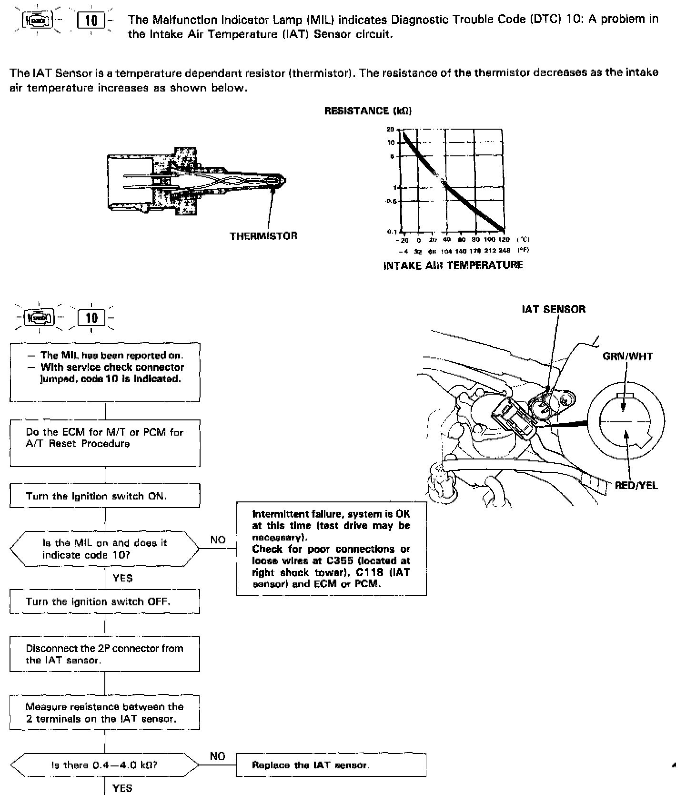
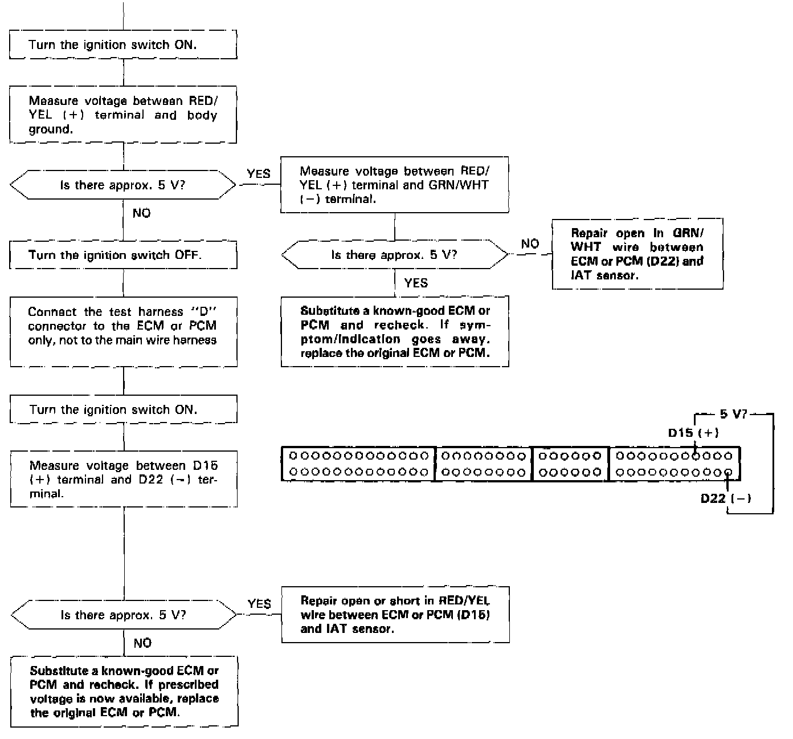

Operation CHARM
: Car repair manuals for everyone.
Home
>>
Acura
>>
1993
>>
Legend Sedan V6-3206cc 3.2L SOHC FI
>>
Repair and Diagnosis
>>
Sensors and Switches
>>
Sensors and Switches - Powertrain Management
>>
Sensors and Switches - Computers and Control Systems
>>
Air Temperature Sensor ( Ambient / Intake )
>>
Testing and Inspection
Air Temperature Sensor ( Ambient / Intake ): Testing and Inspection
CODE 10 INTAKE AIR TEMPERATURE (IAT SENSOR)

PART 1 OF 2

PART 2 OF 2